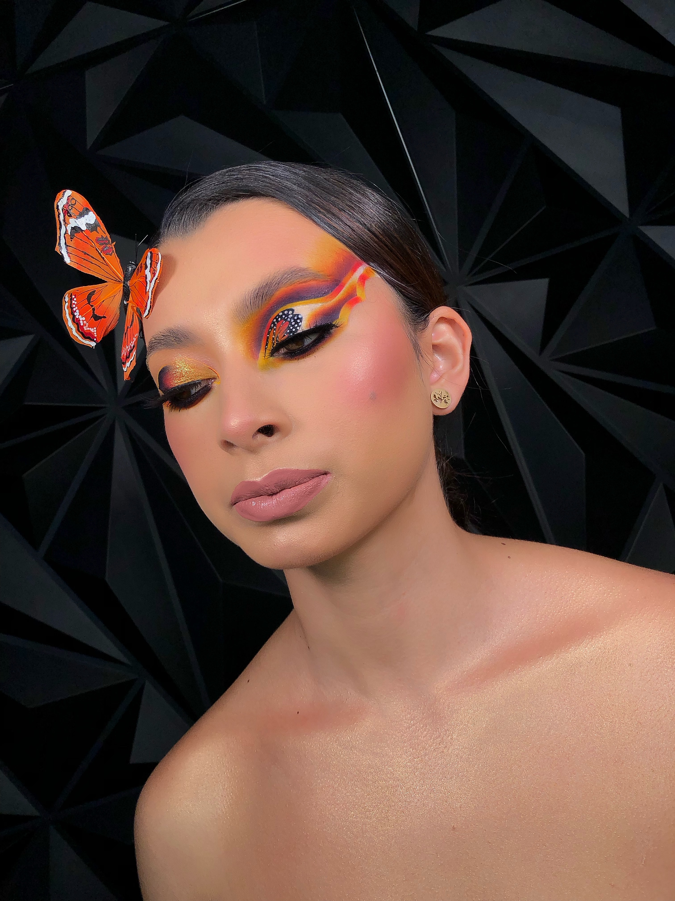
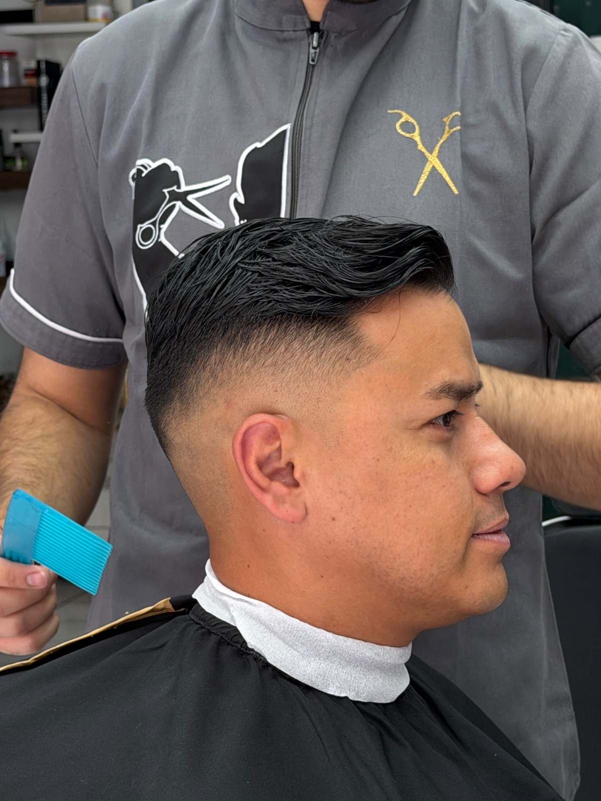
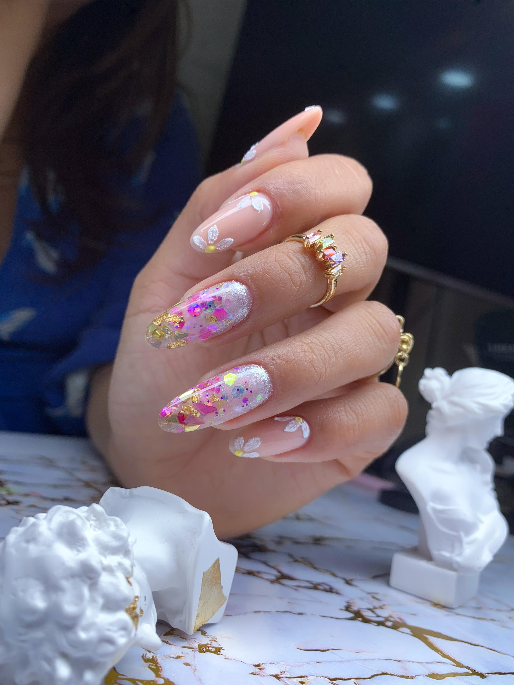
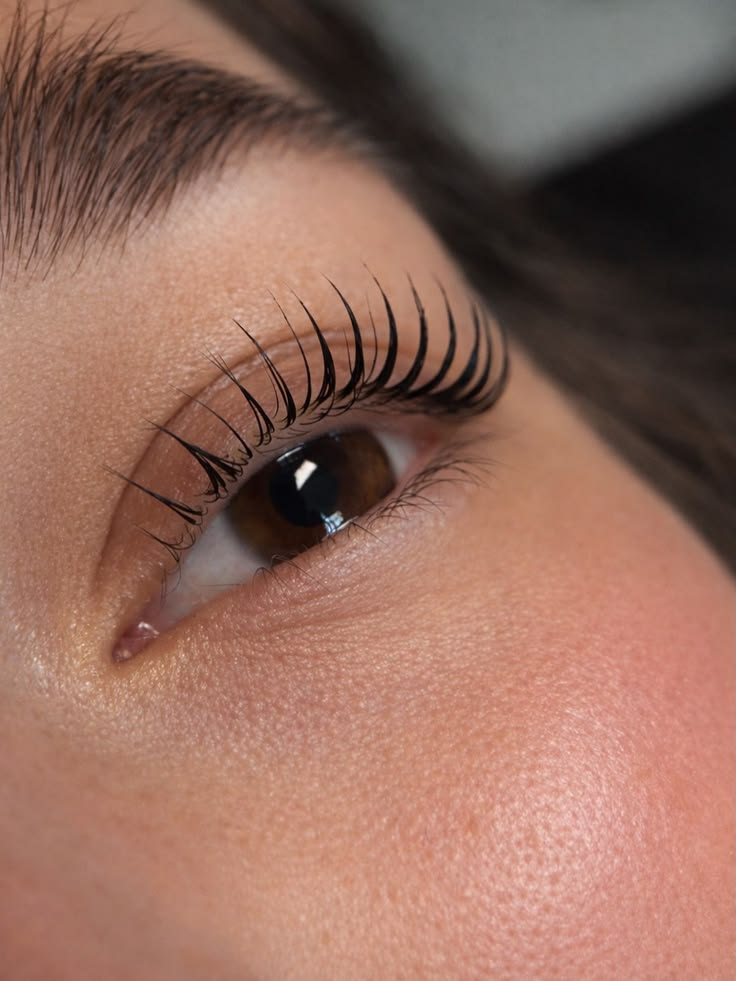
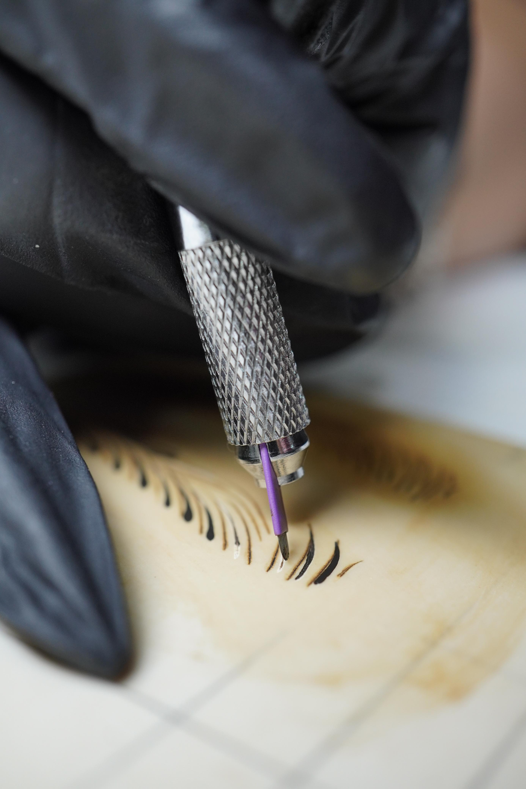
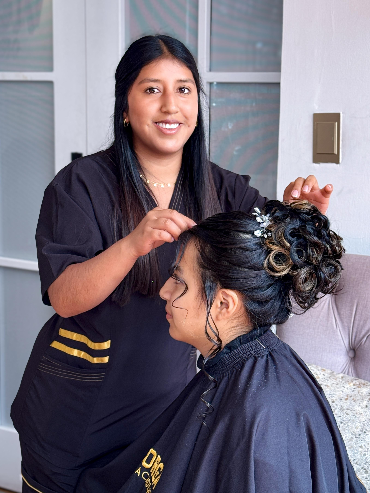

APRENDE HOY. APLÍCALO MAÑANA.
Tu próximo nivel
empieza aquí.
Formación en belleza, práctica real y nuevas oportunidades para ti, en Cuenca.







Aprende
haciendo.
♧ Formación cercana◎ Aprendizaje práctico♧ Certificación de la academia
ENCUENTRA TU ESPECIALIDAD
Grandes habilidades.
Nuevas posibilidades.
VICORGA ACADEMY
El conocimiento se
convierte en práctica.
✂
Técnicas que aplicarásConocimientos y práctica para desarrollar tu oficio.
◇
Una formación integralDesde los fundamentos hasta las técnicas de tu especialidad.
♡
Tu camino profesionalSiete carreras para impulsar tu talento en belleza.
HAZ ESPACIO PARA LO QUE VIENE